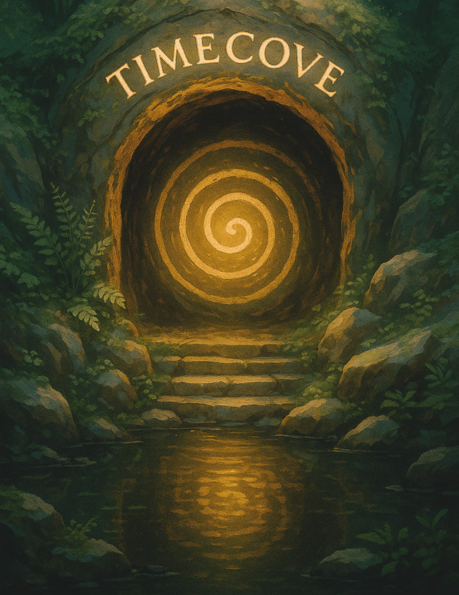

The Timecove is real. You might not see it right away — but it sees you.
Some kids find it when they spin in circles and fall down laughing. Others catch it in dreams, or in spirals drawn without thinking.
It hides in giggles. In treasure maps with no lines. In sunlight that feels warmer than usual.
Inside the Timecove are glowing little things — not just pebbles, but maybe shells, sparks, or stories that forgot how to speak.
No one knows how many are waiting there. Or what they’ll become once they’re found.
But if something’s been calling to you lately… if you’ve seen shapes where there weren’t any… if you’ve felt a secret waiting somewhere just out of reach…
Then maybe — just maybe — you were meant to find it first.
(Whispered by a Timecove creature)
Psst... You found us. We've been waiting a long time. Not because we were lost… but because we were waiting for the right person to come looking.
The Timecove is full of hidden things. Gentle things. Glowing things. Maybe even things that remember you.
Some are quiet. Some hum softly. Some sparkle and vanish if you blink too slowly.
Most of them won’t show themselves right away. But when they do… you’ll know.